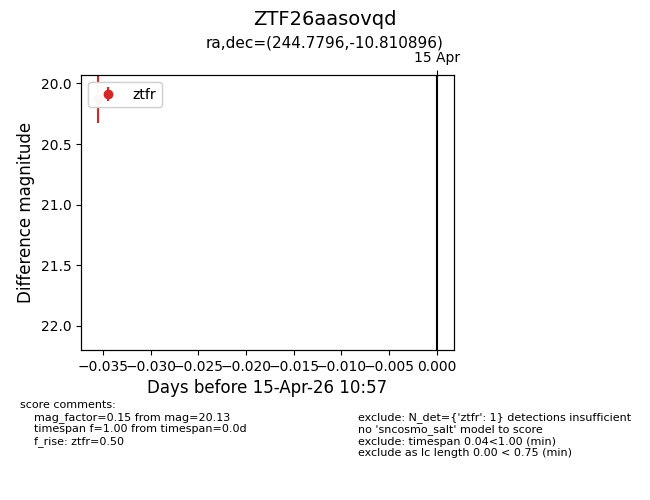
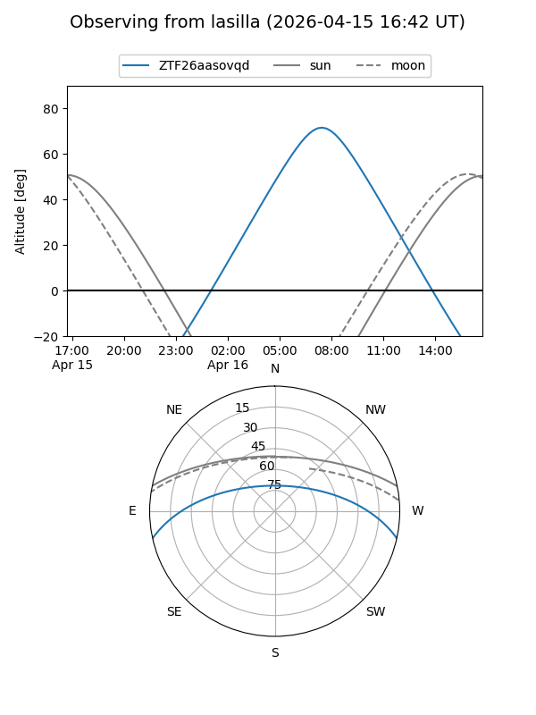
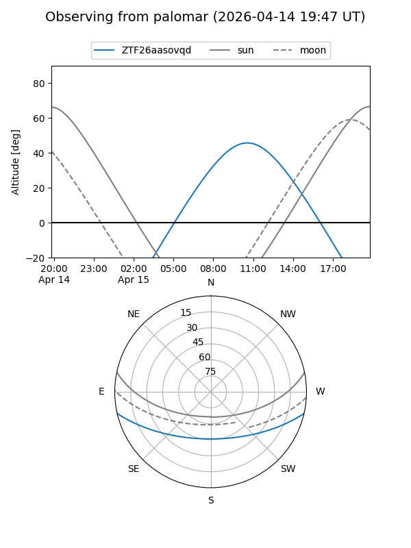

ZTF26aasovqd
Target ZTF26aasovqd at 2026-04-15 11:09
Aliases and brokers:
FINK: link
Lasair: link
ALeRCE: link
alt names
ZTF26aasovqd (ztf,fink_ztf)
Coordinates:
equatorial (ra, dec) = 244.7796,-10.81090
equatorial (HMS+DMS) = 16:19:07.11,-10:48:39.23
galactic (l, b) = (3.1113,+26.97734)
Flags:
Photometry:
last ztfr=20.13
1 ztfr detections
Lightcurve

Visibility


Additional plots